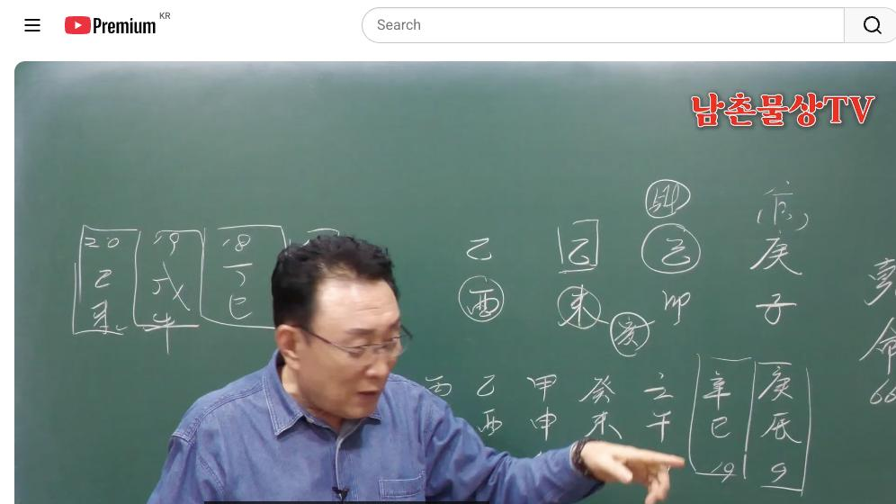

남촌물상TV 전체 문서 › 동영상 V0121
의사가 되려면 사주에 신금과 을목이 있어야 한다.

| 문서 번호 | V0121 (동영상) |
|---|---|
| 영상 URL | https://www.youtube.com/watch?v=PITUV8txedA |
| 영상 ID | PITUV8txedA |
| 게시일 | 2025-03-31 |
| 길이 | 18:55 (1135초) |
| 조회수 | 2,338회 (수집 시점 기준) |
| 카테고리 | Howto & Style |
| 자막 | ko (자동생성) |
| 수집 시각 | 2026-08-30 19:08 (KST) |
영상 설명 (YouTube 설명 원문 그대로)
외과, 성형외과 의사가 되려면 신금과 을목이 있어야 한다.
전체 자막 (409구간 · 타임스탬프 클릭 시 해당 장면으로 이동)
[0:03]남자 사주 66세 경자 김요 을미
[0:08]을류 이제 이렇게 됐습니다 근데 여기
[0:11]제일 중요한 거 이제 그 찾아낸게
[0:13]없는게 뭐냐 자 없는게 뭐가 없어요
[0:17]자 화가
[0:18]없다 자 화가 없다는 얘기는 굉장히
[0:21]가지고 싶다 그겁니다 뭔가를 항시
[0:24]우리 물상 화가 없으면 가지고 싶어
[0:26]하는 그 마음이
[0:28]첫째요 그러 이제 일주가 둘 두 개가
[0:32]있었으니까 얽힐 것으로 보통
[0:34]생각하잖아요 경금 있 경금 있을 때
[0:37]얽히지 않습니다 해결해요 관 그 관이
[0:40]해결해 주기 때문에 그 관계도 그
[0:43]이해하시면 되고 자 을목 1주에 관이
[0:47]어디 있어요 관이 첫째 자 관이
[0:50]여기에 국과 자이 있어요 국과 자에
[0:52]관이 있다 그러면 이제 보통 봤을 때
[0:56]이건 국가나 관계성이 있는 일이다
[0:58]이렇게 이해하시면 되죠 근데 이게
[1:00]월경 합을 하면 신금이 됐다 그
[1:03]얘기는 없는 병화를 끌고 올 수
[1:05]있다고 생각이 들잖아요 자 그러 그건
[1:07]병화는 합이되면 자격증을
[1:10]연상하라 그랬죠 향시 자격증을
[1:13]연상하면 된다 자 그다음에 이제 관은
[1:17]그렇게 보고 재는 어디가 있느냐 자
[1:20]제가 어디 있어요 자 제가 자 기토
[1:23]여기가 지금 재요 여기가 제인데 자
[1:27]재라는 것은이 자리가 어디 자리
[1:29]부모자리
[1:31]네 그 다신 또 그 대신에 제 뿌리가
[1:35]어디가 있는거 봐봐요 자기 밑에 있죠
[1:38]여기 있죠 여기 그러면 그 저 부모가
[1:42]학교 보낼 능력은 충분하다이 정도
[1:45]보시면 금방 이해하실 수 있는 거예요
[1:46]그래서 아 어렸을 때 그래도 그
[1:49]나름대로 편하게 학교 다닐 수 있겠네
[1:51]이런 생각을 먼저 하실 수 있는
[1:53]거예요 자
[1:56]그다음에 지지에서 뭐가 어떤 취 할
[2:00]거 아닙니까 행동 어 할 거냐 간의
[2:04]뿌리는 어디
[2:05]있어요 자 지지의 간의 뿌리 자
[2:08]시지의 유금이 관의
[2:10]뿌리에요 그러면이 관의 유음은 을경
[2:14]합의했을 때 관이죠 신급이 됐단
[2:18]말이에요 간의 뿌리란 말이요 그럼 자
[2:19]을경 합을 하게 되면 전체가 뭘로
[2:22]바뀌었어 음으로 바뀌었다 그래 소
[2:25]여러분들이 얘기한 음동이 하는 거예요
[2:28]이제 거기까지도 생각을 한번 해주셔야
[2:30]돼 그
[2:31]말입니다 자 그러면이 사람이 본래
[2:34]을목 있데 그 성격상이나 부분이
[2:37]굉장히 좋까 안 좋까 좋아요 좋죠
[2:40]당연히 괜찮은 사람이에요 씀씀이도
[2:42]괜찮고 사람을 대하는 좀
[2:45]부드럽습니다음 그러니까 그런 것을
[2:47]이해하시면 돼요
[2:49]그다음에 해묘 미를 할 수가 있다고
[2:51]그래요 지에 해묘 미가 돼 있죠 자
[2:54]해수를 없는데 헤이 하여 언젠가는
[2:56]끌어와 해서 생각을 개연성을 가지고
[2:59]있다 그 대신 또 자오묘유 형태가
[3:02]있잖아요 돼 있잖아요 자오묘유 돼
[3:05]있는 것이기 때문에 저 세 개가 자와
[3:09]묘와 유금이 있는데 금을 쓰게 되면
[3:12]자원 묘로 안 되는 거예요 항시 또
[3:14]헤이 되면 자로 안는 거야 자
[3:17]그렇다면 여러분들이 원국 해석할 때
[3:20]아하 너는 해묘미 할 수가 있고 그
[3:23]말이에요 자 묘미를 할 수가 있다는
[3:26]목의 행위를 할 수가 있고 그 얘기지
[3:29]그러니까 자 여기에서 목의 행위라
[3:31]교육 건축 사업 상대 말이요 근데이
[3:34]사람 얼 얼 합의 돼서 자격증이니
[3:37]결과 가지고 건축 아니지 금의
[3:52]자격증이지만 교육자도 할 수 있네
[3:54]이제 이렇게 쉽게 우리가 이해할 수
[3:57]있다고 보시면 돼요 그래서 가장 쉬운
[3:59]방법으로
[4:01]그러면이 을경 합을 해서 작은 칼을
[4:05]가지고 쓰는 사람이 뭐냐 그 말입니다
[4:08]쓰는 사람이 뭐예요 속살 권을 가지는
[4:10]사람 사람을 죽여서 사는 권리 그것이
[4:13]누구요 판사 검사 의사 간호사 소위
[4:17]이제 칼을 가질 수 있는 작은 칼
[4:19]가질 수 있는 사람을 그 직업을 택할
[4:21]수가 있다라고 봤을 때 자 없는 것이
[4:25]뭐라고까 하라 그랬잖아요 그러면
[4:28]자기가 필요한 때문에 같은 칼을 쓰는
[4:32]직업이라도화에 대한 관계성이 있는
[4:34]직업을 갖게 되죠 그럼 자 칼을
[4:37]쓴다는 얘기는 외과 수술도 성행과
[4:39]정외과 카르스 거 아니에요
[4:42]그런데 일반 외과가 아닌 아름다움을
[4:45]추구하는 가니까 성형과 의사라고 답을
[4:48]딱 집을 수가 있는 거예요 그래서이
[4:50]사주는 성형과 의사를 할 수 있는
[4:52]사주로 답을 정의를 내릴 수가 있다
[4:54]이렇게 정확하게 볼 수
[4:57]있습니다 그래서 어려운 거 아니죠 자
[5:01]그러면 지금 이제이 자오의 형태를
[5:04]취할 수 있고 안 취할 수 있다는
[5:05]얘기는 저 유금을 쓰게 되면 자 안
[5:07]취하 했어요 자 그러면 여기서 이제이
[5:09]사람의 학교에 다녔을 때 우리가 중요
[5:13]생각을 해 봐야 돼 자 그러면 아홉살
[5:15]때부터 18살 때가 경진 대운이
[5:19]경진대운 자 경진대운 그러면 17살
[5:23]때가 그때가 뭐예요 17살 때가 무슨
[5:26]년이에요이 사람 17살 때가
[5:30]대 자 불러봐요 경 경진년이에요 병
[5:35]병 아 병진년 자 17세 자
[5:40]병진년 18세 정 정사 그 19세 무
[5:47]자 무호
[5:49]20세 미 자
[5:51]기미 자 이렇게 딱 써놓고 보시면
[5:54]답이 나올 수가
[5:55]있지 그러면 이제 우리가 안을 쓴다고
[5:58]그랬잖아요
[6:00]자기가 없는 병화가 온 거예요 그러면
[6:03]뭐 무조건 뭐 병화 하니까 뭐 어어
[6:07]꽃힌다 이런 거 생각할 수도 있죠
[6:09]근데 이제이 사람이 17살 때 우리
[6:12]가진 걸 학교 때는 꿈과 희망을
[6:14]가지고 살 때예요 이게 그런 것을
[6:17]사주에 따라서 여러분들이 아 그때 그
[6:20]사고 방식이 어떤 생각을 가지고
[6:22]있다는 것을 이해를 해 보셔야 된다
[6:24]그 말이에요 그렇게 하고 답을
[6:26]적용해야 돼요 그래서 우리 학문은 그
[6:30]시대를 반영한 차라기 때문에 이분이
[6:32]비록 나이가 66세 있을 때 17
[6:36]18 20 살까지의 그 생각이 어떤
[6:38]마음을 가지고 있었는가를 파악을 해
[6:41]알아야 된다 그 말입니다 자 그러면은
[6:44]경진이 경경 두 개 왔어요 그죠 자이
[6:48]대운에 이제 대운 먼저 설명 합시다
[6:51]경경이 두 개 왔으면 두 개의 을경
[6:53]합을 하겠죠 그러면 신신이 될 수거
[6:56]아닙니까 병화를 끌어 오겠네 했다 그
[6:58]말이에요 그죠 자 병화를다는 얘기를
[7:01]지금 올해가 17살이가 무슨 년 병기
[7:04]년인 아이 딱 알아야 돼 그니까 자
[7:08]대운에서이이 행위를 어떤 걸 추구하고
[7:12]있는가를 먼저 딱 캐치가 되잖아요
[7:14]월경 합을 해 둘다 경금이 병화를
[7:17]끌어와 근데이 해가 병화 오는 해예요
[7:20]그죠 자 그럼 병화 뭐 답이 얼 못
[7:23]착했어 그럴 때는 지지를 봐 진유
[7:25]합금이 아 금으로 살 수 있는 뭔가
[7:29]꿈을 가지고 있네 그러 의학 법 이런
[7:32]자기가 칼 자루가 있기 때문에 칼이
[7:34]왔을 때 결과지로 법조 법조인이
[7:37]된다든가 의사가 된다든가 칼을 쓰는
[7:40]직업에 꿈을 가지게 된다 그 말입니다
[7:43]그러니까 진로 결성을 따질 때 얘가
[7:46]어떤 생각을 가지고 있는가는 대운에서
[7:50]일단 그 부분을 이해를 하신 다음에
[7:53]그리고 세운을 딱 집으면 답이 딱
[7:55]나오는 거예요 아하 너 17세이 생각
[7:57]가지고 있었지 그럼 맞습니다
[8:00]그러니까 여러분들이 진로 상담하실 때
[8:03]그런 것 활용을 하실 줄 알아야 돼요
[8:06]그래서 먼저 대운을 먼저 해석한
[8:08]다음에 그다음에 가서 그 해 연도가
[8:11]어떻게 미치는가 보면 된다 그 말이야
[8:13]자 그다음에 저어 18시가 정사 그죠
[8:19]정사 자 정사라 것은 사기 축의 금도
[8:23]되지만 사미 개념도 있잖아요 월경
[8:26]하불 하 잖아요 그러니까 사미 개념
[8:29]있죠 그러면이 사람은 2학년 때까지도
[8:32]꿈과 그 희망이 한 군대로 가고
[8:33]있구나 할 수가 있어요 그러면 자
[8:35]그것만 봐도이 사람이 과냐 문과를
[8:37]금방 짐작할 수 있는 거죠 금방 할
[8:40]수 있잖아요 그러니까지 꿈을 가지고
[8:43]있었던게 어디서 이게 흘러 그러니까
[8:45]사주를 단순하게 하나만 그 해만
[8:47]집어서 무이 어지 이렇게 하면 안
[8:49]된다고 그 그 생태가 자꾸 이어져서
[8:53]어떻게 살아가는 과정을 우리 만들어
[8:55]가는 거라 그 말이에요 그것을 해석을
[8:57]하고 그 진로를 결정해 준 사람이
[8:59]우리 갈 수 있 일이에요 그래서
[9:00]그다음에 꿈이 그렇게 갔어 그런데이
[9:04]19살 때가 뭐예요 그러 자 무토가
[9:08]왔을 때 어떻 거냐 그 말이야 무토
[9:10]왔을
[9:12]때 자 무오 뭐 그러면
[9:15]볼까요이 사주에 무토가 온다는 얘기는
[9:18]저 기토가 있잖아요 근데 통째로
[9:21]무토를 쓸 수도 있어요 그럼 기토에서
[9:24]부모 마음 이때 부모 마음을 안심을
[9:26]써보는 거예요 안심이 자 토이 왔어
[9:29]여기에부터 왔으니 엄마 생각이나 부모
[9:32]생각에서 큰 나무를 내 아들은 심어서
[9:35]좀 켜 봐야겠다이 생각이 들어 안들어
[9:37]그때이 엄마 생각 그런 생각이었다 그
[9:39]말이지 이제 그 아버지 생각도
[9:41]마찬가지고 그러니까 그런 것을
[9:44]여러분들이 생각을 하고 곁들어 준
[9:46]거이 물론이에요 그래서 물론이 그게
[9:48]이해가 안 되는 사람 어렵다 하
[9:50]사람이고 이것을 쉽게 받아들인
[9:53]사람들은 쉽다 하고
[9:55]을합니다 그 우리 물는 제가 그러지만
[9:58]오행을 학문으로 분명히 제가 다
[10:01]정의를 내리잖아요 그러니까 오행을
[10:03]가지고 움직이고 쥐었다 피었다 할 수
[10:06]있는 그 영향을 가질 수 있는게 우리
[10:08]학문이에요 그러기 때문에 어떤 응용의
[10:11]법칙을 이미 생각하고 있는
[10:13]거예요 자 그런데 큰 나무 큰 땅에
[10:16]나무를 신고 싶은데 제 아들은 작은
[10:18]나무야 뭔지 아시겠죠 여기서 이제
[10:22]자기 부모 마음은네 작은 땅이지만
[10:26]나는 뿌리에 목에 뿌리를 갖고 해미를
[10:28]거가 있어 그 큰 마음을 을 갖고
[10:30]여기에 부모 마음 갑목을 끌어다 신고
[10:32]싶은 거예요 근데 자기의 아들은
[10:36]을목이 때문에 나는 부모 생각은 내가
[10:40]갑목에 빛이 되어 주리라 그럼 네가
[10:43]타고 올라가 그 얘기 아닙니까
[10:45]여기까지를 생각할 수 있는게
[10:56]안심법문 부모의 생각이 어떤 생각을
[10:59]가지고 있고
[11:00]얘가 어떤 방향으로 가겠다는 것을 알
[11:02]수가 있다 그
[11:04]말입니다 자 이해 됐죠 자 그러니까
[11:06]부모 생각을 다 하는 거예요 그리고
[11:08]뿌리가 헤엄이 때문에 뭔가 내 아들
[11:11]똑똑히 잘알 키우진 욕심이 교육
[11:12]교육이 굉장히 강한
[11:14]부모지지 이거 보고도 부모가 교육률이
[11:17]강한 부모다 뭐 우리 아들 일찍가
[11:19]일찍 돈 벌러 내 보내겠다 이런
[11:21]생각을 금방 차릴 수가
[11:24]있어요 그까 안 심법을 쓰면 다
[11:26]나오죠 무슨 생각 하고 있는게 부모가
[11:28]어떤 마음을 가지고 있는 거 이제
[11:30]이런 걸
[11:31]찾으면 가장 쉬운 방법으로 해석이
[11:34]됩니다 자
[11:36]그다음에 스살 때가 김죠 그죠 그럼
[11:40]신사 대운이 여기 대운이 있다 그
[11:42]말이에 자 그런데 신사 대운은 그럼
[11:45]어떤 것인가 신사대 여기서 이제 응유
[11:48]방법을 조금 찾으세요 자 그럼 무슨
[11:51]얘기냐 신사 대운은 여기에 뿌리가
[11:55]있잖아요 여기에 칼자루 역할을 해요
[11:57]그럼 칼자루를 찾았다고 봐야 돼
[11:59]물에서 찾았다고 보요 여기에서 신금이
[12:02]칼자 차지고 요놈은 뭐 남아 있잖아요
[12:04]이때 을경 하을 한다고 생각하면
[12:06]돼요이 응용하는 방법이 조금
[12:08]여러분들이 기초 에서보다 한걸음
[12:10]업그레드 돼서 설명을 드리는 거예요
[12:13]그러니까이 칼자루가 여기 왔으니까 칼
[12:16]차를 차지하고 있어요 여기에 사유축
[12:18]유금이 딱 맞잖아요 그럼 이거 남아
[12:20]있네 이거는 여기하고 합을 해 그럼
[12:22]국가지 합을 신신이 될 거 아니에요
[12:24]이때 신신호 보라 그 말입니다 이것이
[12:27]기초에서 업그레이드해서 오버하는 거기
[12:30]과정이에요
[12:32]그러니까 태양의 길을 가지고 가겠다는
[12:35]념이 이미 있어 그러면 자
[12:38]여러분들이이 태양의 길을 간다는
[12:41]얘기는 신신해정해리
[12:53]이제
[12:55]아시겠죠 그러니까 아까 처음에 제가
[12:57]설명할 때 저도이 민이 생각 안 해요
[13:00]안 해 봤어 부모 마음이 그렇다 그
[13:03]말이야 우리 아들이 을목이 그 나는
[13:07]갑목에 그 나무를 부모가 끌어다가
[13:09]만들어 주면 내 아들이 탁 올라게 콤
[13:13]한다 그 마음이었는데 이때가 바로
[13:16]20세가 김인현 있다고 왔잖아 그
[13:18]말이에요 그러 갑목을 엄마 부모가
[13:21]감목 등을 해주 재수할 때 비용을대
[13:23]줬으니까 타고 올라가 합격기 안에
[13:25]합격한다 그 말입니다 이렇게 쉽게
[13:28]알아볼 수가 있어 합격 여를 알 수가
[13:31]있다 자 아셨죠네 자 그래서 이제
[13:34]재수한 관계를 여러분들
[13:38]이해하셨으면 전체 흐름을 봐라고
[13:41]그랬죠 한번 자 4주에 볼 때이
[13:43]사람이 살아는 과정 전체 60년 동안
[13:46]70살 때 그 흐름이 어디가 관계성이
[13:48]좋겠는가 한번 먼저 던져 봐요 그러면
[13:50]우리는 어떻게 볼까요 어느 때가 제일
[13:53]좋다고 보십니까 성 자 그러면 크게
[13:56]봐봐요이
[13:59]세계가 합해지면 제일 좋은 거
[14:00]아니에요 제일 좋은 거 아닙니까
[14:02]그래서 이럴 때 이제 우리가 봤을 때
[14:05]세계가 합해서 을경 합을 할 거
[14:07]아닙니까네 그죠 그러면 자 그걸
[14:10]찾아보면 되지 어느 연도가요 쭉
[14:12]보시면 하하 59세 이때이 사람은
[14:16]최고의 모든 거 누릴 수 있는
[14:17]스타일이 되는 거예요 그러면 자 그
[14:19]말은 여기서 한번 더 해 볼까요
[14:21]자기가 성과 의사라고 했을 때 했을
[14:24]때 요금이 두 개
[14:26]왔죠네 응 두 배 왔잖아요 두 개네
[14:29]자 두 개 왔으니 나하고 똑같은
[14:32]직업을 가진 그 그 쫄들이 두 개로
[14:35]온다이 말이야 밑에 사람들이 그럼
[14:38]이때 사람들이 의사가 몇 명 이렇게
[14:40]되는 거예요 그러면 이때 페이닥터가
[14:43]몇 명 될고 할 거란 말 그 얘기는
[14:45]그 전에 혼자 했던 것이 의사가 몇
[14:48]명씩 두고 할 수 있는 그러한
[14:50]병원체가 될 수 있다는 때다가 그
[14:52]말입니다 이걸 찾아낼 줄 알아야
[14:54]여러분들이 가장 정확하게 사주를 볼
[14:58]수 있다 그 말입니다
[15:00]그럼이 사람은 이때 제일 호을 부를
[15:02]누리고 제일 권위를 누리고 좋을
[15:04]때예요 자 그다음
[15:06]화 자
[15:09]그다음에 여기에서 묘미를 하고 있다는
[15:12]얘기를 내가 먼저 드렸죠네 근데이
[15:15]부모 마음은 갑목을 끌어다가 묘미를
[15:19]만들고 싶었다 그 말이에요 그러면 자
[15:21]부모 생각은 어떤 생각 무슨 생각
[15:24]교육의 생각이었죠 그러면 을목도 무슨
[15:26]교육 내 아들이 교수할 수 있는
[15:28]생각을 가지
[15:30]그이 사람은 아까 두 가지 한다
[15:32]그랬어요 해묘미의 직업을 할 수도
[15:35]있고이 금을 쓰는 직업을 두 가지 할
[15:37]수 있다는 답을 이미 정해져서 알
[15:40]수가 있다 그
[15:41]말입니다 정확하죠 그러니까이 사람은
[15:45]자기가 성외과 의사를 하면서 나중에는
[15:49]교수로 갈 수 있다 그 말입니다 자
[15:51]우리가 상식적인 얘기로 봤을 때 외과
[15:55]의사들은 제일 단가가 좋을 때 어느
[15:57]때예요 봉부 7만 받을때
[16:02]자 외과 의사는 칼을 쓰기 때문에
[16:04]손이 떨리면 안 돼요 그래서 50대가
[16:08]벗어나면 칼을 잘 못 쓰게 돼
[16:10]있습니다 그래서 성형 거사는 거의
[16:13]페이 닥트를 두고 쓰게 돼 있어요
[16:16]그래서 전성기 애과 의사들이 칼을
[16:18]잡는 의사들이 손이 안 떨릴 때 제일
[16:21]가과 가이 비싸 하셨죠 그니까 그럼
[16:25]제일 싸 사람이 어떤 사람이냐 가정
[16:28]각과 멀리 갈 수 있는 사람 쉽게에서
[16:31]지금 가정과는 뭡니까 우리가 모든
[16:34]진찰이 종합 병원이에요 쉽게에서
[16:35]가정과는 뭐 머리 아 내과 머리 아어
[16:38]뭐 다 온단 말이에요이 사람들은
[16:40]어린이부터 시작해서 어른까지 다 가서
[16:42]끝까지 갈 수 있는 직업이 소위 가정
[16:45]아가예요 이제 이런 사람들은 큰
[16:48]가정과 병원 내에서도 큰 돈많이 안
[16:50]줘도 돼 전문의가 있기 때문에 근데
[16:53]이제 개인 병을 할 때는 그것이
[16:55]끝까지 갈 수 있기 때문에 이제 이런
[16:57]것도 참고로 여러분들이 해 주셔야
[16:58]한다 그말 입니다 그게 기초적인
[17:01]상식을 우리는 충분하게 지식화 시켜서
[17:05]그걸 이해할 수 있는 정도가 돼 줘야
[17:07]여러분들이 상담할 때 편하는 거지
[17:09]다방면으로 몰라 의사가 오면 의사
[17:11]나름대로 예과 성역과 무과 뭐 다
[17:13]척척척 답을 줄 수 있는 능력을
[17:15]가지고 있어야 상담이 되는 거지
[17:17]아무것도 몰라 그니까 의사야 이런
[17:20]분양한 것은 여러분들은 경쟁에지게 돼
[17:23]있는 거예요 그래서 다방 학식과 이런
[17:26]걸 자꾸 넓혀서 여러분 해 나가 줘야
[17:29]누가 얻든지음 그래 상대할 수 있어
[17:31]이게 돼야 되거든요 그 사람보다 똑똑
[17:34]같이는 못하면 그 사람이 내부
[17:36]분야에서는 내가 알고
[17:38]있어야지 그니까 이래서이 사람의
[17:40]사주를 전체 보면은 성과 의사로 갖출
[17:44]수 있는 여건이 되고 나중에는이 갑
[17:46]계묘 자 여기서부터 볼까요 개미가
[17:50]오면은 어떤 망 자 무토를 불러올 거
[17:53]아니에요 불러와 여기서 이제 우리가
[17:55]불러 걸 쓰는 거예요 불러와 목을
[17:58]들어와 심어 과목을 끌어와 그렇게
[18:01]되면 이제 교육으로 가는 거예요
[18:02]그러니까
[18:04]자기가 성과 의사를 하면서 이제 조금
[18:08]자리가 대표 과장하면서 예류 교수로
[18:10]학교 강위를 갈 수 있는 교수가 되는
[18:12]겁니다 교수가 언제까지 자 그러이
[18:15]관까지 오잖아요까지 다 오잖아요
[18:17]그래서 자기가 60 대학 교수 60억
[18:20]정년이 교수를 하면 돼요 그러니까
[18:22]지금 가사들이 보통
[18:24]보편적으로 손이 떨려서 못하기 때문에
[18:27]어느 시점이 가면 교수 관계 좋 다
[18:29]이제 이렇게 설명을 드릴 수 있어요
[18:31]그래서 어 오늘이 시간에 유튜브
[18:34]보시는 손님들도 전부 다 보시면 어떤
[18:37]사람이 성형 예과를 할 수 있고
[18:39]정의가 할 수 있는가를 오늘 설명을
[18:41]드렸습니다 다음 영상도 좋은 영상으로
[18:43]보도 감사합니다
칠판 원국 판독 (영상 프레임을 AI가 시각 판독 · 원판 대조 필수)
乾造
천간
乙
천간
乙
천간
己
천간
庚
지지
酉
지지
未
지지
卯
지지
子
판독 신뢰도: 높음
판독 노트: 일주 乙未 박스, 酉未卯 합충 동그라미, 세운 18丁巳·19戊午 박스. 8자 전부 판독+대운 정합 · 시점 14:11 · 해당 장면 보기↗
자막은 YouTube에서 제공하는 한국어 자동음성인식(ASR) 트랙의 원문입니다. 고유명사·한자 용어·숫자 표기에 자동인식 특유의 오류가 있을 수 있어, 원문을 가능한 한 그대로 보존했습니다. 위에 칠판 원국 판독 섹션이 있는 영상은 화면 프레임을 AI가 시각 판독한 것으로 신뢰도 표기를 확인하고, 없는 영상은 화면 도표가 문서에 포함되지 않습니다.